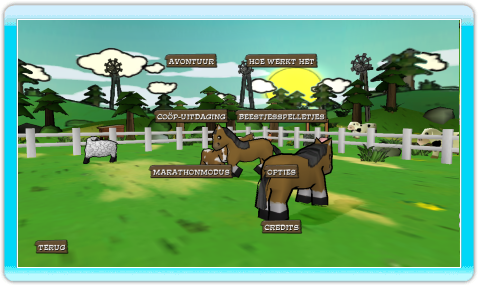

8 |
Hoofdmenu |
 |

Kies welk soort spel je wilt spelen, of selecteer het Optiesmenu om de spelinstellingen te veranderen. Voor spelsoorten met meerdere spelers heeft iedere speler zijn of haar eigen Wii-afstandsbediening nodig.
Avontuur - Reis de wereld rond en stel je vaardigheid in het bouwen van hekken op de proef. Speel alleen of met een andere speler door alle 50 niveaus.
Samen de uitdaging aan – Speel door deze multiplayer niveaus met maximaal vier spelers. Gebruik je vrienden om die boze beer weg te lokken!
Marathonmodus – In dit type spel voor 1 tot 4 spelers staat je een bijna oneindig aantal confrontaties met beestjes te wachten. Hoe ver kom jij?
Beestjesspelletjes - Verzamel je vrienden voor het spelen van deze minigames. Er kunnen tot wel 4 spelers meedoen!
Hoe Te Spelen - Nieuwe spelers dienen deze handleiding te bekijken, die laat zien hoe je Critter Round-Up speelt.
Opties - Verander je geluidsinstellingen en bekijk hier de besturing.
Credits - Bekijk de namen van de mensen die Critter Round-Up voor je maakten. |
 |
 |
 |